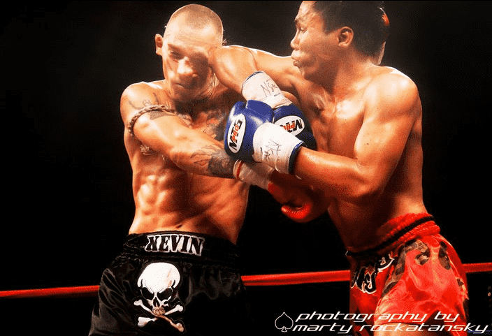
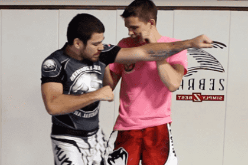
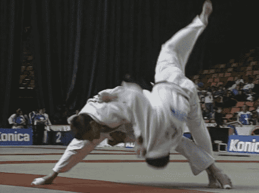

< < < Back
4 Effective Throws That Every Man Should Know – Return Of Kings
So, we have now honoured the Chinese saying “Being far, you kick. Being close, you punch” with a few techniques to add to our arsenal. But no fighter is complete without using grappling techniques and throws. We will now observe four techniques that many martial arts consider essential.
1. The Burmese elbow toss
Burmese boxing or Lethwei is particularly efficient in a non-competitive environment as all its competitions are bare-knuckle fights. This move is one of their classics. Muay Thai also uses it extensively.

1. It starts with an horizontal elbow strike to stun the opponent or can be used after fading in front of a jab. At the end of the hit, you find yourself close to your opponent, with your body turned sideways

2. Your arm is now on the outside of the opponent’s head and your body bent away from him. You will bring your front leg on the side of his and block it. Your stomach is against is hip
3. While you use a reverse motion (like a spring), you will push his head under your arm and away from your body, while turning your hips. The opponent will lose balance and fall
2. The chidaoba hip throw (ura nage + leg lift)
This move is used as a side attack or a counter to an opponent that has his arm over your neck and attempts to throw you over his hip. It comes from the traditional Georgian wrestling called “Chidaoba.” This one is like a wrestling suplex but instead of being directly behind your opponent, you are slightly on his side.
Example of a classic Olympic wrestling suplex

1. It has a similar start as the judo throw “Ura-nage.” You are under the arm of the opponent, as close as possible, slightly under hip level. You start the movement by squatting with a straight back, exactly like under a squat rack. The hand you have behind his back rests flat on his hip. Your other hand can grab any part of his upper body (lapel, shoulder, side of the neck, etc)
2. You then drive him upwards with the strength of your legs and hips, limiting the strain on your own back. The lower you will go, the easier it will be to lift him. What makes this move particular is that you use the top of your thigh in addition to your hip as you are at the maximum of your extension

3. It has two purposes: helping with the weight of the opponent to make him fall on his two shoulders (maximum score in competition or disorientation in a non-competitive scenario) and preventing him from hooking his leg between yours to block the throw. Reaching the full swing of the throw, you rotate with your opponent to accelerate his fall with your own weight.
Here it is, perfectly demonstrated on an opponent 80 pounds heavier than the victor. The victim also happens to be the European Champion and the world bronze medalist in Judo.
3. The middle kick counter and inside hook

This movement comes from Combat Sambo. This is the most important move I have ever learnt and has helped me a lot both inside and outside the dojo. It is a middle kick block with a throw.
The block in itself is composed of three steps:

1. As the kick comes towards you, you must side step to absorb some of the force of the hit
2. From the guard up, you must intercept the kick at ribcage level, by passing your hand under your elbow
You will stop it with your open palm, to “cup” the coming kick. Too rigid, you will hurt your wrist, too soft, the kick will pass and hit you in the ribs. It must feel like a spring

3. You must then catch the foot under your arm and lock it tight under your armpit, before the opponent withdraws it
Then things become interesting:
1. First of all, you must grab the lead arm of your opponent and bend his chest towards the ground, to prevent him from hitting you, as you have only one arm free

2. Then hook his support leg from the inside while slightly lifting him to make it easier

3.You can then finish the move by using a leg submission on his Achilles tendon, stepping on his groin or carrying the fight on the ground
4. Tai Otoshi
This throw comes from Judo and the Japanese equivalent is “body drop.” Both legs of the opponent are blocked, which makes it harder for him to counter. Almost all of the martial arts that use prehension include this technique, which is proof of its efficiency.

1. The throw starts when your back is in contact with the chest of the opponent. You are either holding him by his lapel and sleeve or neck and wrist/elbow. This move can also be used after punching the opponent while holding him in a side clinch
2. You extend your leg (the one in front of the opponent) wide enough to block both his knees while you remain stable on your feet. It is important that you remain strong on your support foot

3. Finalize the movement by turning your hips and pulling the opponent towards the ground and the inside

4. Quite often, the opponent can cling to your clothing and bring you with him as he falls. It is not as bad as it seems as his body will absorb the impact for you, hurt him and put you in a good pinning hold (Hon-Gesa-Gatame)
Bosse et progresse
There you have it—effective ways to throw down your opponent and bring the fight to the ground. A good warm up is necessary before a grappling session and practicing throws is an excellent way to work on your cardio.
The next and final installment will focus on delivering the coup de grâce on the ground.
Read More: 4 Effective Leg Fighting Techniques That Every Man Should Know